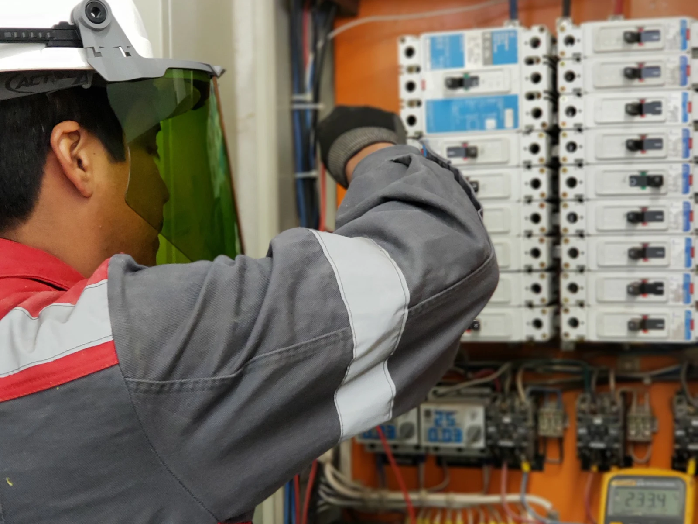
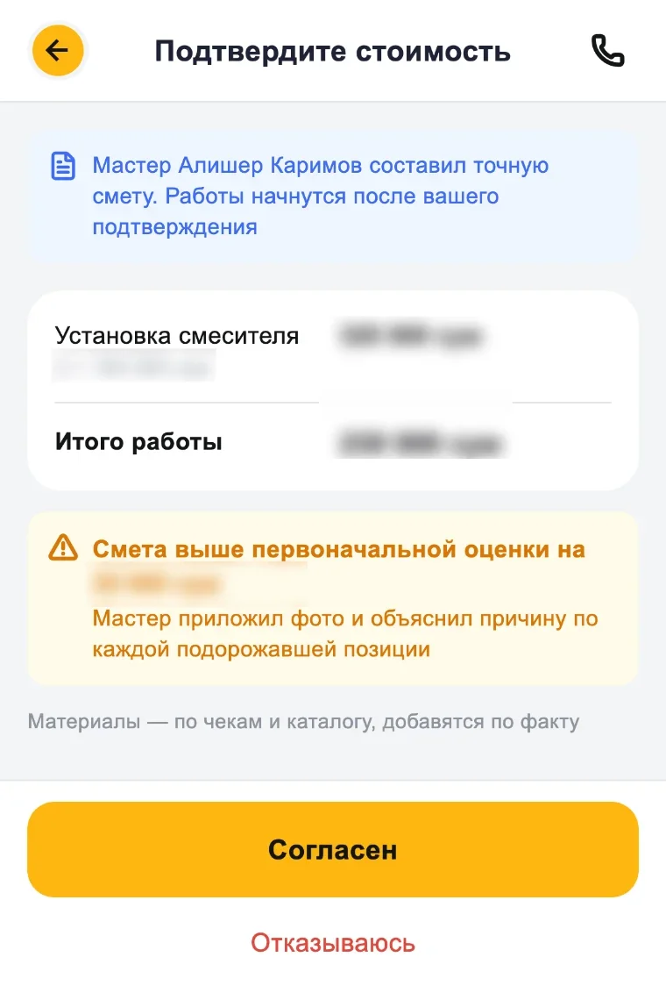
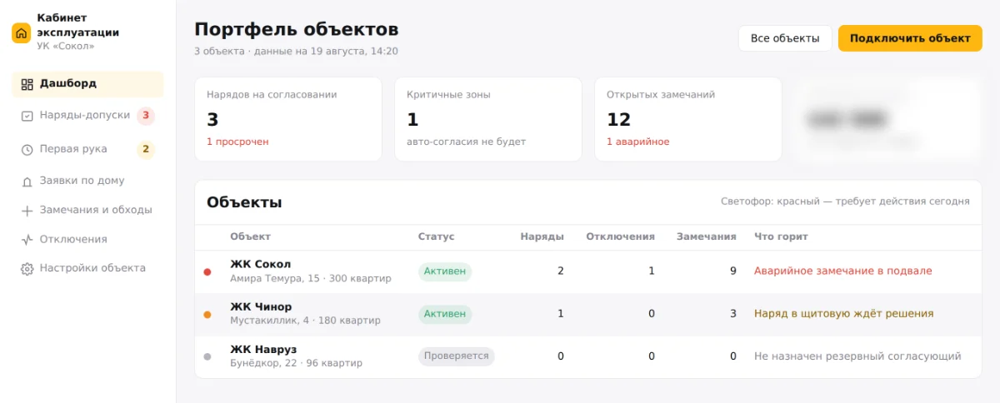
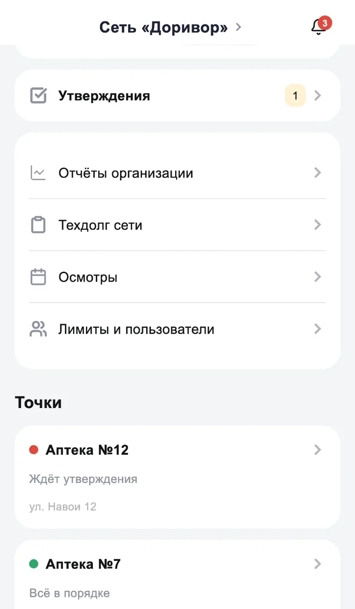

Платформа управления ремонтом и обслуживанием
Мы помогаем жителям, бизнесу и управляющим компаниям организовать работы: от обращения и согласования до результата, документов и истории объекта.

Не ремонт по вызову, а цифровой слой обслуживания объектов
У каждого объекта есть история, у каждого обращения — результат.
Четыре стороны, один процесс
Ремонт живёт в звонках, чатах и памяти отдельных людей
Заявки, люди, деньги и история объектов существуют раздельно. Поэтому полной картины нет ни у кого — и каждая сторона теряет своё.
- Житель не понимает цену и статус.
- Бизнес не видит расходы по объектам.
- Управляющая компания не видит обращения и качество работ.
- Мастер не имеет стабильного потока заказов.
Одна заявка связывает всё
Обращение, согласование, выполнение, документы и история объекта — внутри одной записи. Всё, о чём договорились, остаётся в ней.
Ремонт начинается только там, где есть доверие

Мастер не хочет начинать работу без уверенности в оплате. Клиент не хочет платить вперёд: боится остаться и без ремонта, и без денег. Именно здесь возникает главный риск для обеих сторон.
SOZO фиксирует условия до начала работы: что делаем, сколько стоит, кто платит и каким должен быть результат. Клиент понимает, за что платит. Мастер понимает, за какую работу и по каким правилам получит деньги.
Если возникает спор, у сторон есть не переписка в чате, а заявка с зафиксированными договорённостями.
| Обычный мастер | SOZO |
|---|---|
| Договорённость в звонке или чате | Условия зафиксированы в заявке |
| Предоплата — риск для клиента | Платите после приёмки работы — через SOZO |
| Гарантия на словах | Акт, история работ и единая точка ответственности |
| При проблеме мастер может исчезнуть | Клиент обращается в SOZO |
Гарантию обеспечивает не мастер на словах.
Условия работ, согласованная стоимость и результат фиксируются в заявке и акте. Если в течение гарантийного срока результат не соответствует договорённости или проблема повторяется, клиент обращается в SOZO. Мы проверяем случай и организуем гарантийное исправление.
SOZO отвечает за процесс и не оставляет клиента один на один с проблемой после ремонта.
Сервис для жителей становится управляемым
Ваша команда остаётся центром сервиса.
SOZO даёт процессы, прозрачность и связь с жителями — независимо от того, выполняют работы штатные сотрудники или подрядчики. Обращения, уведомления, допуски, статусы и история по дому живут в одном рабочем пространстве, а не в чатах и журналах на вахте.
- Обращения жителей — в одном списке, с ответственным и сроком.
- Оповещения об отключениях и объявления — адресно, а не бумагой на подъезде.
- Допуски в общие зоны и пропуска — с согласованием и журналом.
- Свои сотрудники и подрядчики — с задачами и загрузкой.
- История и отчёты по дому — правлению, собственнику, арендаторам.

Каждая работа делает следующий выезд быстрее
В системе остаются история оборудования, предыдущие работы, доступы, рекомендации и плановые задачи. Объект перестаёт зависеть от памяти отдельного мастера или диспетчера.
Для тех, кто управляет объектом — бизнеса и управляющей компании, — это означает простую вещь: обслуживание можно планировать, а не ждать аварии.

Три модели дохода
Сервисная маржа
Разовые работы для жителей и организаций. Контур построен целиком: обращение, согласование, выполнение, документы, расчёт с мастером.
Контрактное обслуживание
Регулярное обслуживание объектов бизнеса по договору. Договоры, лимиты, согласования и отчёты по каждому объекту работают.
Подписка для управляющих компаний
Кабинет, допуски и работа с жителями готовы. Внедрение объекта — отдельная работа менеджера: реестр помещений, обучение, сопровождение первого месяца.
SOZO спроектирован под локальную инфраструктуру: платежи, документы, языки, требования к данным и реальную работу сервисных команд в Узбекистане.
Приложение: как это устроено внутри
Чем подтверждается работа
Мастер фиксирует состояние до и после прямо в заявке, материалы вносятся с подтверждающими документами, а заявка не закрывается, пока этого нет. Акт и гарантия собираются из заявки автоматически, отдельной сборки документов не требуется.
Согласование и лимиты
У организации каждая точка имеет свой лимит: работы в его пределах запускаются сразу, всё, что дороже, уходит на утверждение ответственному. Дополнительные работы, вскрывшиеся на месте, согласуются отдельно; вынужденные и рекомендованные разделены и живут по разным правилам.
Планирование и аварии
Время предлагается только то, под которое есть свободный исполнитель: смета превращается в расчётную длительность и занимает конкретные слоты. Аварийные обращения принимаются круглосуточно и идут вперёд плановых; при массовом отключении заявки группируются, а жители получают оповещение.
Учёт и ответственность
Движение денег фиксируется записями, которые не редактируются: отчёт всегда совпадает с тем, что происходило. Цена, о которой договорились, не пересчитывается задним числом. Ответственность за ущерб несёт компания — под это сформирован собственный резерв, поскольку страховых продуктов такого рода на рынке нет.
Что заложено под рост
Город и владелец данных — поля во всех записях с первого дня, денежный учёт отделён от операционного, цена у заявки необязательна, справочники и модули настраиваются под клиента. Поэтому второй город — это настройка, а продажа системы компаниям с собственным техническим отделом не требует переписывания.
Состояние
Работают серверная часть с полным циклом заявки, приложения клиента и мастера, диспетчерская, административная панель, кабинет управляющей организации и публичные страницы. Интерфейсы поддерживают десять языков.